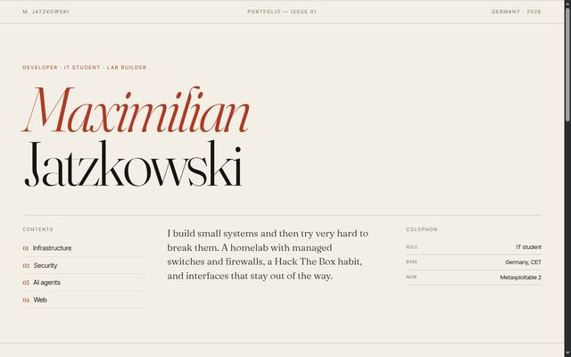
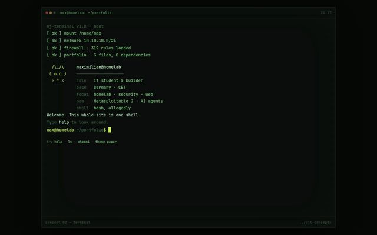
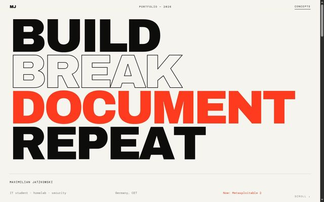
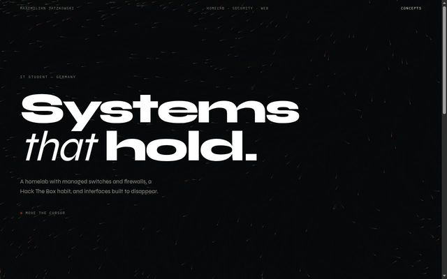
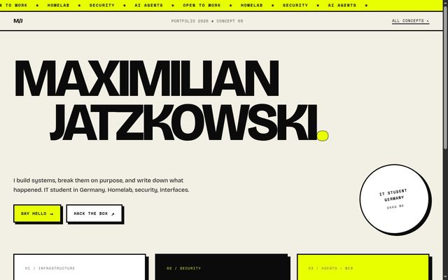
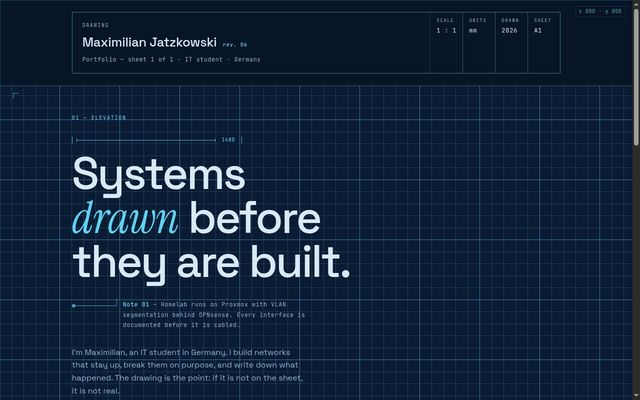
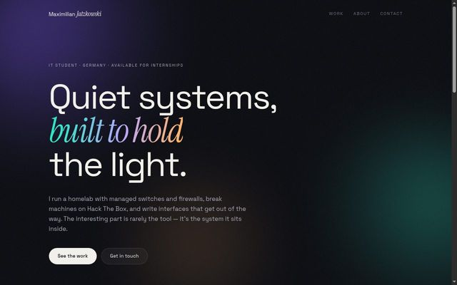
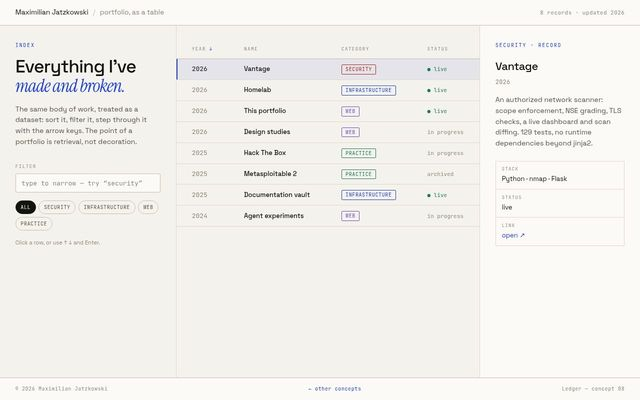

Infrastructure
A self-built server, managed switches, firewall rules, and a segmented network — documented end to end, so future me can debug past me.
Portfolio — 2026
I'm Maximilian — a 25-year-old IT student in Germany. I run a homelab with managed switches and firewalls, work through Hack The Box, and build interfaces that don't make people think about the interface.
01Focus
A self-built server, managed switches, firewall rules, and a segmented network — documented end to end, so future me can debug past me.
Hack The Box machines and local labs like Metasploitable 2: enumeration, exploitation, and the patience to write down every step.
Small tool-calling agents and automation experiments — built to be useful first and a demo second, which is the harder order.
Interfaces with real hierarchy, honest performance budgets, and no framework wherever a framework isn't earning its weight.
02Work
Homelab inventory, health checks and drift. One TOML file says what should be running; Warden checks it, records history, and reports what changed since last time.
Python · TOML · SQLiteA scope-enforced network scanner and vulnerability triage tool. Wraps nmap, nikto, whatweb and TLS inspection behind an authorisation gate, then grades every finding by how sure it actually is.
Python · nmap · FlaskBare-metal server, managed switches, firewall rules, and a segmented network — with documentation for the whole build.
Linux · Networking · FirewallsMachines and challenges across web, network, and privilege escalation; notes kept for every box, including the dead ends.
Enumeration · Priv-escTool-calling agents for research and automation, and a running argument with myself about where they are actually worth it.
LLMs · Python · ToolingHand-written, no framework, no build step. Content in one file, craft in two others. Press c.
HTML/CSS · JavaScript03Designs
The same content, argued eight different ways — a study in how much a layout decides. Each one is a single hand-written page: one HTML file, one stylesheet, one script.

01Paper Editorial print layout, reading progress
02Terminal The site is a shell; it answers commands
03Kinetic Poster type, marquee driven by scroll velocity
04Spatial Generative flow field reacting to the cursor
05Brutal Acid yellow, hard shadows, magnetic buttons
06Blueprint A technical drawing: grid paper, dimensions, title block
07Aurora Depth through light — drifting gradients, glass
08Ledger The portfolio as a dataset — filter, sort, keyboard04About
I learn by building the thing, breaking it, and writing down what happened.
I'm 25, studying IT in Germany. Outside of coursework I run a homelab — a server, managed switches, firewalls, a segmented network — and keep documentation for all of it, because a system nobody can explain is a system nobody can fix.
Security is the other half: Hack The Box and local labs like Metasploitable 2, where the interesting part is rarely the exploit and usually the enumeration. Lately I've been building small AI agents and working out where they genuinely help instead of where they merely look impressive.
I work in English, think in German, and prefer a short conversation to a long spec. A cat is involved in the day-to-day, but she mostly supervises.